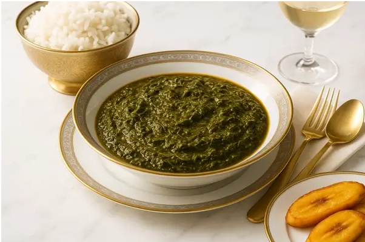

East Africa
Isombe
Isombe is one of Rwanda's most loved home-cooked dishes. It is made from pounded cassava leaves, simmered slowly with eggplant, spinach, onion and a rich peanut paste until thick, dark green and creamy. Similar dishes are cooked in Burundi, Tanzania and the Democratic Republic of Congo, where it is called sombe or pondu.
Cassava grows well across the region, so its leaves have long been an affordable, nourishing everyday food. Isombe is usually served with rice, boiled plantain (ibitoki), sweet potatoes or ugali, and it often appears at family gatherings and weekend meals.
Ingredients
- 500 g pounded cassava leaves (fresh or frozen)
- 1 eggplant, diced
- 2 cups spinach, chopped
- 1 onion, chopped
- 1 leek or 3 spring onions, sliced
- 2 garlic cloves, crushed
- 1 green bell pepper, diced
- 3 tbsp peanut paste (smooth peanut butter)
- 3 tbsp palm oil or vegetable oil
- 4 cups water
- 1 tsp salt (or to taste)
Instructions
Step 1: Boil the cassava leaves
- Put the pounded cassava leaves in a large pot with the water and bring to a boil.
- Simmer, partly covered, for at least 1 hour, stirring now and then. Raw cassava leaves must always be cooked thoroughly before eating.
Step 2: Add the vegetables
- Add the onion, leek, garlic, eggplant and green pepper.
- Cook for another 20 minutes until the eggplant is very soft.
Step 3: Add the peanut paste
- Loosen the peanut paste with a little hot liquid from the pot, then stir it in.
- Add the spinach and salt and simmer for 15 minutes, stirring so it does not stick.
Step 4: Finish and serve
- Stir in the oil and cook for 5 more minutes until thick and creamy.
- Serve hot with rice, boiled plantain or sweet potatoes.
Watch how it's made
Nutrition facts
| Nutrient | Amount |
|---|---|
| Calories | about 280 kcal |
| Carbohydrates | about 20 g |
| Protein | about 9 g |
| Fat | about 19 g |
| Fiber | about 9 g |
Where it comes from
Isombe is an everyday favorite in Rwanda, with close cousins across the Great Lakes region.